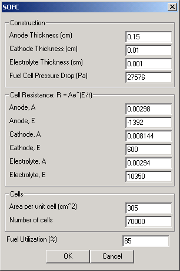
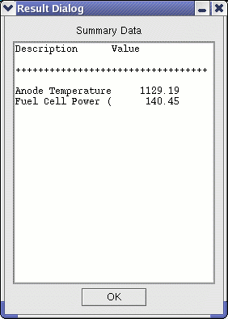

|  | This user interface allows the user to manipulate fuel cell characteristics and perfomance. The user can input not only fuel cell size and quantity, but also the cell resistance and general construction of the unit.
|
|  | This screen shows results after the module is executed. The first line shows the exiting anode (outlet gas) temperature while the second shows the electrical energy produced by the fuel cell.
|